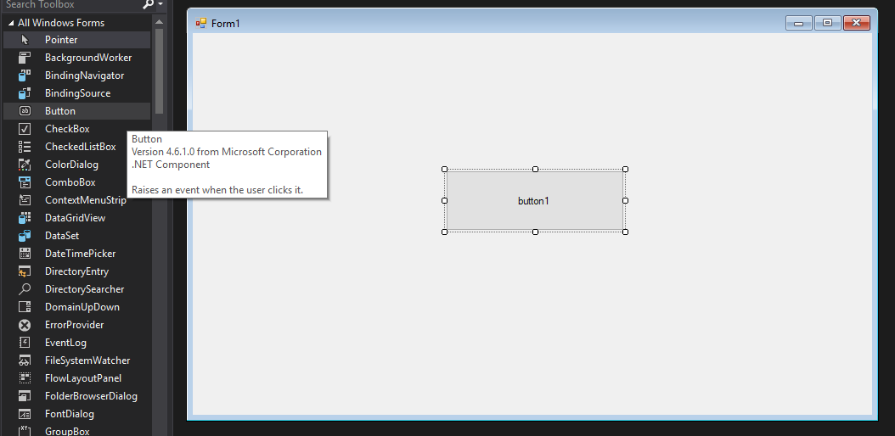
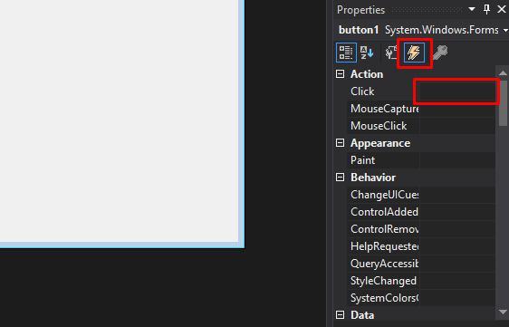
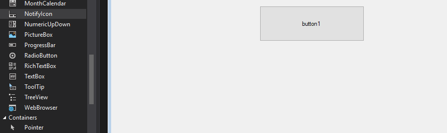
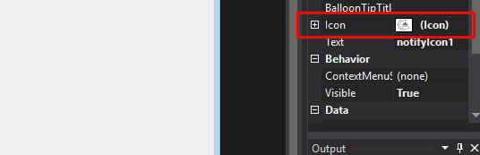
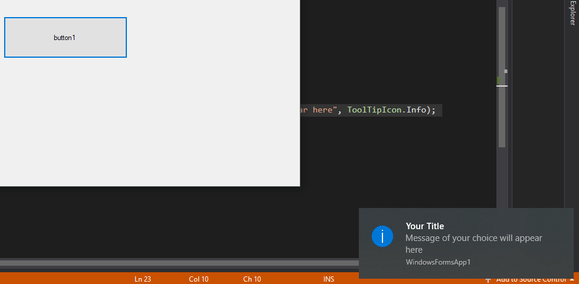

Here is a simple example of a window form with a button click to show a ballon popup up in the windows tray.
First create windows form applicaiton in your visual studio and add a button from the tool box in the form like below
Go to button's properties window (press f4). Click on event icons, it will show you the list of events below. we have to apply a click event on the button. You can double click on the button also which will take you to the code view of the form with automatically added click event function
When you see the below code snippet ready in your code view

Add the notify icon also in your windows form
also you need to add the icon by going to the notifiy icon's property. without that ballon popup will not appear.
Now add the following code in to the button click event
Run your application and click on the button. You should see the popup appear in the windows tray like below
try it!